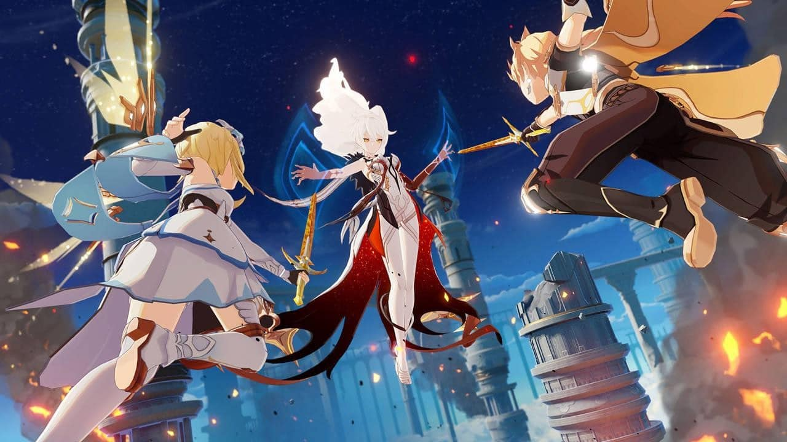

Genshin Impact é um RPG desenvolvido pela miHoYo e ambientado em um mundo aberto repleto de criaturas. Com uma narrativa cativante e com uma notável variedade de personagens, o game entrega muitas possibilidades e chama atenção desde o seu lançamento em setembro de 2020. O título encontra-se disponível para PC, PlayStation 4 e PlayStation 5, além das plataformas mobile (Android e iOS). Tendo o mês de maio de 2021 como referência, o game atingiu aproximadamente 41 milhões de jogadores e pico de usuários maior que 7,5 milhões. Aproximadamente 300 mil contas do PlayStation 4 acessam o jogo diariamente.
Ao iniciar o jogo, os personagens assistem a uma animação que nos apresenta à batalha que ocasionou toda a busca por respostas do “Viajante” — é assim que o protagonista é genericamente chamado — e acabou o levando a Mondstadt
Ao enfrentarem uma deusa que os impede de transitar entre os mundos, o casal de irmãos gêmeos, Aether e Lumie, são separados após perderem o confronto. A entidade os teleporta para um mundo chamado Teyvat. Para recuperar seus poderes e reencontrar sua família, o “Viajante” terá de passar por alguns desafios que se desenrolam, enquanto você explora o novo mundo.
Configurações mínimas:
Processador: Intel Core i5 ou equivalente;
Memória RAM: 8 GB;
Placa de Vídeo: nVidia GeForce GT 1030.